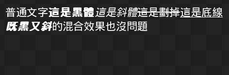
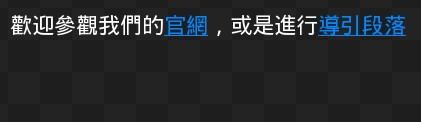
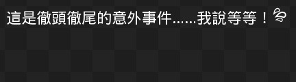
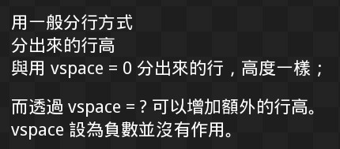
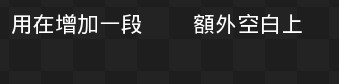
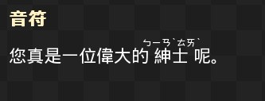
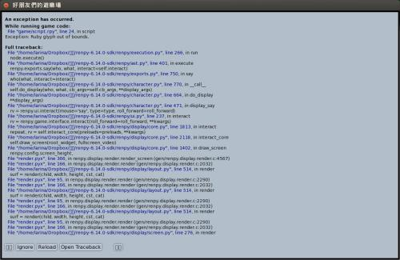
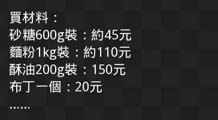

<!DOCTYPE html PUBLIC "-//W3C//DTD XHTML 1.0 Transitional//EN" "http://www.w3.org/TR/xhtml1/DTD/xhtml1-transitional.dtd">
<html xmlns="http://www.w3.org/1999/xhtml" xml:lang="en-gb" lang="en-gb" >
<head>
<script src="https://ajax.googleapis.com/ajax/libs/jquery/1.11.1/jquery.min.js"></script>
<link rel="shortcut icon" href="../../images/favicon.ico" />
	  <meta http-equiv="content-type" content="text/html; charset=utf-8" />
  <meta name="robots" content="index, follow" />
  <meta name="keywords" content="OSSFNL815" />
  <meta name="title" content="《雪凡與好朋友們的 Ren'Py 遊戲引擎初學心得提示》第五回：所以說語言是人類文明的瑰寶" />
  <meta name="description" content="感謝大家在凜凜寒冬中也不忘準時收看本節目。各位好，這裡是主持人雪凡。 「大家好，我是泰克斯 (text)。」 「啊，在下是音符。」 「我是絲蔻兒。」 「各位好，我們是概念少女們！」 「......說是這麼說，不過請允許我再次重申，我只是被拉來湊數的，性別什麼的應該很明顯才對。」 「確實看得出來，手術辛苦了呢，小泰。」 「......儘管有點想問妳在鬼扯些什麼，不過想想果然還是沒有介意的必要吧。」" />
  <meta name="generator" content="" />
  <title>《雪凡與好朋友們的 Ren'Py 遊戲引擎初學心得提示》第五回：所以說語言是人類文明的瑰寶 - OpenFoundry</title>
  <link href="../../favicon.ico" rel="shortcut icon" type="image/x-icon" />
  <link rel="stylesheet" href="../../components/com_gantry/css/gantry.css" type="text/css" />
  <link rel="stylesheet" href="../../components/com_gantry/css/grid-12.css" type="text/css" />
  <link rel="stylesheet" href="../../components/com_gantry/css/joomla.css" type="text/css" />
  <link rel="stylesheet" href="../../templates/rt_quantive_j15/css/joomla.css" type="text/css" />
  <link rel="stylesheet" href="../../templates/rt_quantive_j15/css/style1.css" type="text/css" />
  <link rel="stylesheet" href="../../templates/rt_quantive_j15/css/light-body.css" type="text/css" />
  <link rel="stylesheet" href="../../templates/rt_quantive_j15/css/demo-styles.css" type="text/css" />
  <link rel="stylesheet" href="../../templates/rt_quantive_j15/css/template.css" type="text/css" />
  <link rel="stylesheet" href="../../templates/rt_quantive_j15/css/typography.css" type="text/css" />
  <link rel="stylesheet" href="../../templates/rt_quantive_j15/css/fusionmenu.css" type="text/css" />
  <style type="text/css">
    <!--
#rt-main-surround ul.menu li.active > a, #rt-main-surround ul.menu li.active > .separator, #rt-main-surround ul.menu li.active > .item, #rt-main-surround .square4 ul.menu li:hover > a, #rt-main-surround .square4 ul.menu li:hover > .item, #rt-main-surround .square4 ul.menu li:hover > .separator, .roktabs-links ul li.active span {color:#0088B5;}
a, #rt-main-surround ul.menu a:hover, #rt-main-surround ul.menu .separator:hover, #rt-main-surround ul.menu .item:hover {color:#0088B5;}
    -->
  </style>
  <script type="text/javascript" src="../../components/com_jcomments/js/jcomments-v2.1.js%3Fv=2"></script>
  <script type="text/javascript" src="../../components/com_jcomments/libraries/joomlatune/ajax.js"></script>
  <script type="text/javascript" src="../../media/system/js/mootools.js"></script>
  <script type="text/javascript" src="../../media/system/js/caption.js"></script>
  <script type="text/javascript" src="../../components/com_gantry/js/gantry-buildspans.js"></script>
  <script type="text/javascript" src="../../components/com_gantry/js/gantry-inputs.js"></script>
  <script type="text/javascript" src="../../templates/rt_quantive_j15/js/jquery.cookie.js"></script>
  <script type="text/javascript" src="../../modules/mod_roknavmenu/themes/fusion/js/fusion.js"></script>
  <script type="text/javascript" src="../../modules/mod_ofssologin/js/ofssologin.js"></script>
  <script type="text/javascript">

			window.addEvent('domready', function() {
				var modules = ['rt-block'];
				var header = ['h3','h2','h1'];
				GantryBuildSpans(modules, header);
			});
		
InputsExclusion.push('.content_vote','#rt-popup')
		        window.addEvent('load', function() {
					new Fusion('ul.menutop', {
						pill: 0,
						effect: 'slide and fade',
						opacity: 1,
						hideDelay: 500,
						centered: 0,
						tweakInitial: {'x': -2, 'y': 0},
        				tweakSubsequent: {'x': 0, 'y': -14},
						menuFx: {duration: 200, transition: Fx.Transitions.Sine.easeOut},
						pillFx: {duration: 400, transition: Fx.Transitions.Back.easeOut}
					});
	            });
  </script>
<!-- <script type="text/javascript" src="/sso/javascripts/langsync.js"></script> -->
<!-- <script src="/templates/rt_quantive_j15/js/ossf.js"></script> -->
<script type="text/javascript">

  var _gaq = _gaq || [];
  _gaq.push(['_setAccount', 'UA-4136519-1']);
  _gaq.push(['_trackPageview']);

  (function() {
    var ga = document.createElement('script'); ga.type = 'text/javascript'; ga.async = true;
    ga.src = ('https:' == document.location.protocol ? 'https://ssl' : 'http://www') + '.google-analytics.com/ga.js';
    var s = document.getElementsByTagName('script')[0]; s.parentNode.insertBefore(ga, s);
  })();

</script>
</head>
	<body  class="backgroundlevel-low backgroundstyle-style8 bodylevel-med bodystyle-light cssstyle-style1 logostyle-dark font-family-helvetica font-size-is-default menu-type-fusionmenu col12 ">
		<div id="rt-main-background">
			<div class="rt-container">
																<div id="rt-header">
					<div class="rt-grid-7 rt-alpha">
    			<div class="rt-block">
    	    	<a href="../../index.html" id="rt-logo"></a>
    		</div>
	    
</div>
<div class="rt-grid-5 rt-omega">
                    <div class="square9">
                    <div class="rt-block">
				<div class="rt-module-surround">
					<div class="rt-module-top"><div class="rt-module-top2"><div class="rt-module-top3"></div></div></div>
					<div class="rt-module-inner">
	                							<div class="module-content">
		                	<div class="ofssologin_square9"><a href="../../index.html">Login</a>&nbsp;&nbsp|&nbsp;&nbsp;<span><a href="https://www.openfoundry.org/tw/foss-programs/8874" ><span lang="tw" xml:lang="tw">繁體中文</span></a></li></ul></span><!--Joom!fish V2.0.4 (Lightning)-->
<!-- &copy; 2003-2009 Think Network, released under the GPL. -->
<!-- More information: at http://www.joomfish.net -->
<div class="ofssologin_search_square9">
  <form id="of_search" action="https://www.openfoundry.org/of/openfoundry/search" method="get" onsubmit="of_search(); return false;">
    <select id="of_search_type">
      <option value="Projects"> Projects </option>
      <option value="Content"> Content </option>
      <option value="People"> People </option>
    </select>
    <input id="query" name="query" id="mod_search_searchword" maxlength="50" alt="search" class="inputbox" type="text" size="28" value="search..."  onblur="if(this.value=='') this.value='search...';" onfocus="if(this.value=='search...') this.value='';" />
    <input type="hidden" name="commit" value="search" />
  </form>
</div></div>						</div>
					</div>
					<div class="rt-module-bottom"><div class="rt-module-bottom2"><div class="rt-module-bottom3"></div></div></div>
				</div>
            </div>
                </div>
		
</div>
					<div class="clear"></div>
				</div>
																<div id="rt-navigation"><div id="rt-navigation2"><div id="rt-navigation3">
					
<div class="nopill">
	<ul class="menutop level1 " >
						<li class="item1 root" >
					<a class="orphan item bullet" href="../../index.html"  >
				<span>
			    				Home				   
				</span>
			</a>
			
			
	</li>	
							<li class="item32 root" >
					<a class="orphan item bullet" href="../../archived.html"  >
				<span>
			    				Projects				   
				</span>
			</a>
			
			
	</li>	
							<li class="item186 root" >
					<a class="orphan item bullet" href="../community.html"  >
				<span>
			    				Who&#039;s Who				   
				</span>
			</a>
			
			
	</li>	
							<li class="item4 root" >
					<a class="orphan item bullet" href="../news.html"  >
				<span>
			    				News				   
				</span>
			</a>
			
			
	</li>	
							<li class="item5 root" >
					<a class="orphan item bullet" href="../law-and-licensing.html"  >
				<span>
			    				Law &amp; Licensing				   
				</span>
			</a>
			
			
	</li>	
							<li class="item3 root" >
					<a class="orphan item bullet" href="../activities.html"  >
				<span>
			    				Activities				   
				</span>
			</a>
			
			
	</li>	
							<li class="item2 root" >
					<a class="orphan item bullet" href="../resourcecatalog.html"  >
				<span>
			    				Resource Catalog				   
				</span>
			</a>
			
			
	</li>	
							<li class="item45 root" >
					<a class="orphan item bullet" href="../about.html"  >
				<span>
			    				About				   
				</span>
			</a>
			
			
	</li>	
				</ul>
</div>

				    <div class="clear"></div>
				</div></div></div>
								<div class="rt-surround"><div class="rt-surround2"><div class="rt-surround3">
										<div id="rt-showcase-section">
												<div id="rt-showcase">
							<div class="rt-grid-12 rt-alpha rt-omega">
    		<div class="clear"></div>
		
		
                <div class="close-note">
                    <div class="rt-block">
               					<div class="module-content">
                	<div style="font-size:medium; background-image:linear-gradient(120deg,#159957,#4298b2);color:white;padding:20px;margin:-10px -18px;">感謝您對「自由軟體鑄造場」的支持與愛護，十多年來「自由軟體鑄造場」受中央研究院支持，並在資訊科學研究所以及資訊科技創新研究中心執行，現已完成階段性的任務。 本網站預計持續維運至 2021年底，網站內容基本上不會再更動。<br />也紀念我們永遠的朋友 李士傑先生（Shih-Chieh Ilya Li）。</div>				</div>
            </div>
                </div>
		
</div>
							<div class="clear"></div>
						</div>
																	</div>
															<div id="rt-main-surround">
												<div id="rt-breadcrumbs">
								<div class="rt-breadcrumb-surround">
		<a href="../../index.html" id="breadcrumbs-home"></a>
		<span class="breadcrumbs pathway">
<a href="../foss-programs.html" class="pathway">FOSS Programs</a>  <span class="no-link">《雪凡與好朋友們的 Ren'Py 遊戲引擎初學心得提示》第五回：所以說語言是人類文明的瑰寶</span></span>
	</div>
	
							<div class="clear"></div>
						</div>
																							              <div id="rt-main" class="sa3-mb9">
                <div class="rt-main-inner">
                    <div class="rt-grid-9 rt-push-3">
                                                <div class="rt-block">
                            							<div class="square1">
							<div class="rt-module-surround">
								<div class="rt-module-top"><div class="rt-module-top2"><div class="rt-module-top3"></div></div></div>
								<div class="rt-module-inner">
		                            <div id="rt-mainbody">
		                                
<div class="rt-joomla ">
	<div class="rt-article">
		
				<div class="rt-headline"><h1 class="rt-article-title">《雪凡與好朋友們的 Ren'Py 遊戲引擎初學心得提示》第五回：所以說語言是人類文明的瑰寶</h1>		</div>
		<div class="clear"></div>
		
		
		
				<div class="rt-articleinfo">
						<div class="rt-article-icons">
								<a href="8874--renpy-%3Ftmpl=component&amp;print=1&amp;layout=default&amp;page=.html" title="Print" onclick="window.open(this.href,'win2','status=no,toolbar=no,scrollbars=yes,titlebar=no,menubar=no,resizable=yes,width=640,height=480,directories=no,location=no'); return false;" rel="nofollow"><span class="icon print"></span></a>																</div>
			
			<span class="rt-date-posted">
						 Created at			Monday, 10 December 2012 15:08						&nbsp;&nbsp;&nbsp;&nbsp;						Last Updated on Wednesday, 15 May 2013 12:56						</span>

						<span class="rt-author">
				Written by 林雪凡			</span>
				
					</div>
		
		
		<p>感謝大家在凜凜寒冬中也不忘準時收看本節目。各位好，這裡是主持人雪凡。</p>
<p>「大家好，我是泰克斯 (text)。」</p>
<p>「啊，在下是音符。」</p>
<p>「我是絲蔻兒。」</p>
<p>  「各位好，我們是概念少女們！」</p>


<p>「......說是這麼說，不過請允許我再次重申，我只是被拉來湊數的，性別什麼的應該很明顯才對。」</p>
<p>「確實看得出來，手術辛苦了呢，小泰。」</p>
<p>「......儘管有點想問妳在鬼扯些什麼，不過想想果然還是沒有介意的必要吧。」</p>
<p>「切！稍微變頑強了一點呢。」</p>
<p>「小泰、絲蔻兒，請別這樣......」</p>
<p>呃……看來今天的氣氛會很火熱呢。到底是哪個傻瓜請那兩個同時來上節目的啊？社長！社長在哪裡？</p>
<p>「何必介意這種小事呢，這只是我們展現愛的方式而已啊。」</p>
<p>確實能感覺到，一股歪曲過度的愛......</p>
<p>「我會努力不製造您困擾的。請快點開始吧。」</p>
<p>是、是嗎？說的也是。</p>
<br />
<p>回到正題吧。</p>
<p>本回要加以介紹的，是文字的特效與格式化。</p>
<p>在由 Ren'Py 驅動的遊戲世界中，創作者可在文字中插入許多特別的「標籤」，來控制文字顯示時的效果。這些效果包括字型改變，顯示速度或滑鼠點擊的細部控制，還有諸如插入連結、插入行內圖片的功能。就算要插入變數，並將變數加以格式化，那也沒有問題。</p>
<p>－－在角色吼叫的時候，將字體驟然放大，那不是很棒嗎？</p>
<p>就讓我們研究看看這一切要如何進行吧。</p>
<br />
<h1>在文字中插入變數</h1>
<p>我們從比較抽象一點的地方開始，來聊聊變數吧。</p>
<br />
<p>當我們希望遊戲中的文字能隨變數動態變化時，我們可以用 if 語句。這在第三回時做過示範。</p>
<p>但說到底，if 語句本身，只適用在「數量有限的分歧」上面。當變數可能產生的結果太多－－比方說，允許玩家自由輸入角色名字－－時，企圖用 if 讓文字產生足夠多的分歧，可說是一件完全不可能的任務。</p>
<p>這種時候，我們不應該用 if。取而代之，我們應該要在文字中間，直接插入變數本身！</p>
<br />
<p>「想插入變數的話，請用方括號 ([])。以下由我示範，各位請看。」</p>
<pre>    # 文字輸入示範
    text "雖然有些無趣，但基本的手續還是要辦一下的。"
    text "請告訴我你的名字，我得做個記錄才行。"

    # 使用以下所示的 renpy.input() 語句，可讓玩家自由輸入文字
    # 第一個參數是提示字，第二個參數是預設值

    $ name = renpy.input("您的名字是……", "路人丙")
    
    text "是[name]啊，很高興認識你。"
</pre>
<br />
<p>另一種常見的使用方法，用來減少打字與剪貼量：</p>
<pre>menu:
    "難得這個時間有空，去哪裡打發好呢？"
    "艦橋":
        position = "艦橋"
    "戰情室":
        position = "CIC"
    "輪機室":
        position = "輪機室"
"啊，去[position]一趟好了。"
</pre>
<br />
<p>還可以用來顯示某些內部狀態......</p>
<pre>"現在的好感度是：[luka_relation]！"
</pre>
<br />
<p>只要巧妙使用，插入變數顯然能成為一項有力的法寶。</p>
<br />
<h2>跳脫</h2>
<p>或許各位會有疑問，以中括號作為標記，在字串中插入變數固然變得非常方便。不過如此一來，當想要在文字中顯示普通的方括號時，又要怎麼做呢？</p>
<p>比方說，以下想要顯示一個方括號......</p>
<pre>    "聽我提起這個問題，愛爾想了想，將那本厚到無以復加的聖典取出。說真格的，這還是我第一次見到這本聖典發揮它原本該有的功能。"
    el "我看看哦......啊，這裡是這樣寫的......[紅之章、第二節]：紅色的神明將在六輪奇月的照耀下降至地面，大地燃起審判的火焰。"
</pre>
<p>「這小劇場也寫太長了吧？」</p>
<p>不要吐嘈！只是不知不覺就......嗯！回到正題。</p>
<br />
<p>如果您直接打出以上台詞，那遊戲會立刻掛掉，因為遊戲引擎會在讀取上述第二句時，去找一個名叫「紅之章、第二節」的變數，但，當然找不到。而且我們也不是希望她輸出變數，而是希望它按照字面輸出，找到也沒用。</p>
<p>我們需要的是「跳脫」。</p>
<p>跳脫是程式設計中的一種常見概念，簡單說來，就是讓有特殊功能的字符（比如說 " 被用作為字串的邊界－－所以您不可能直接在字串中打入這個字），消除他的特殊功能，恢復字面上的意思，才能正確地以「字面意義」在字串裡使用。</p>
<p>這種概念在很多程式語言中都有，不過作法各有不同。</p>
<br />
<p>此處讓方括號進行跳脫，需要用 [[ 取代 [，如下：</p>
<pre>    el "我看看哦......啊，這裡是這樣寫的......[[紅之章、第二節]：紅色的神明將在六輪奇月的照耀下降至地面，大地燃起審判的火焰。"
</pre>
<p>如此一來，實際顯示時，[[ 就會被替換為 [ 正常顯示出來，也不會再去試圖讀取變數了。</p>
<br />
<h2>插入變數的格式化</h2>
<p>前述的中括弧內部，不光只能是個簡單的變數名，還可以包含 Python Format Specification Mini-Language 中的格式化描述符號。這能幫助各位輕鬆調節變數（通常是數字變數）的顯示方式，讓「同一個變數可以用不同的字串格式」顯示。</p>
<p>有點複雜？</p>
<p>說得更具體一點，可以讓一個數字在顯示時，改變顯示的位數究竟有幾位，或是前面補零、留空白等......諸如此類。</p>
<p><span class="inset-left yellowbox"> <span class="inset-right-title">【變數格式化的限制】</span>音符：「那個......這邊提及的『變數格式化』，僅僅只影響『純文字字串』本身。至於替文字加上黑體斜體這類，「字串」本身沒有改變，只是讓「字體」變化的，那就不算在此處提及的變數格式化之處理範圍裡面。字體改變是文字標籤的任務，後面會提到。」</span></p>
<br /><br /><br /><br /><br /><br /><br /><br /><br /><br /><br />
<p>變數格式化的寫法，是在變數後方接上半形冒號，再於冒號後方接上「格式描述」。比方說下面這個例子......</p>
<pre>$ pi = 3.1415926535
"圓周率為：[pi:.2]"
</pre>
<p>中括號中的 pi 是變數，至於半形冒號後面的 ".2"，那就是「格式描述」了！</p>
<br />
<p>以上例來說，".2" 這個格式描述，代表 pi 將顯示到小數點後兩位，一言以蔽之，[pi:.2] 將會被代換為 "3.14"......嗯，是大家很熟悉的數字呢。</p>
<br />
<p>變數格式化能用的格式，請<a target="_blank" href="https://www.python.org/dev/peps/pep-3101/">參考這裡</a>或<a target="_blank" href="https://docs.python.org/dev/library/string.html#format-specification-mini-language">這裡</a>這兩份 Python 文件。不過以上兩份文件都很難讀，就連主持人我都讀得很頭疼，加上 Ren'Py 與 Python 之間還有些小小差異需要您自行轉譯（見 <a target="_blank" href="https://www.renpy.org/doc/html/text.html#interpolating-data">Ren'Py 官網</a>這裡 ）。故還是幫大家整理一下，列在下面。</p>
<br />
<p>請看以下範例：</p>
<pre>    # 計算 CG 達成度

    $ cg_total = 127
    $ cg_get = 31
    $ cg_complete = float(cg_get)/cg_total # 完成度

    # 上面那行的 float() 函數，是用來將整數轉換成「可允許小數點存在」的「浮點數」用的。
    # 因為程式本身設計，「整數除整數只能產生整數」，所以必須先把其中一項轉為浮點數，才能得出正確結果。
    # 我知道這種設計很反人類啦，但各位看倌和我抱怨也沒用......

# 未格式化的顯示結果： 0.244094488189

    "CG 完成度為：[cg_complete]唷！"
    # 一堆小數點，這絕對不是您想要的......


# 「小數點加數字」：顯示小數點後指定的位數

    "CG 完成度為：[cg_complete:.2]唷！" # 顯示： 0.24


# 「雙百分比符號」：顯示百分數

    "CG 完成度為：[cg_complete:%%]唷！" # 顯示： 24%
    "CG 完成度為：[cg_complete:.2%%]唷！" # 這裡和小數點合併使用，顯示： 24.41%

# ============================

    # 武器攻擊力、武器防禦力
    $ weapon_def = -15
    $ weapon_att = 40

# 「+ 或"空白"」：控制正負號顯示

    "白銀之杖：被聖光祝福過的強大牧師手杖，對抗妖魔效果一流，不過神光也會吸引怪物攻擊"
    "攻擊力[weapon_att]點！防禦力[weapon_def]點！"     # 兩數字分別顯示為：「40」、「-15」。如同此處示範，預設格式化的方式，是遇到負數才顯示負號。

    "攻擊力[weapon_att:+]點！防禦力[weapon_def:+]點！" # 兩數字分別顯示為：「+40」、「-15」，正負號都會顯示。

    "攻擊力[weapon_att: ]點！防禦力[weapon_def: ]點！" # 兩數字分別顯示為：「 40」、「-15」，正號不顯示但會留下空白空間。

# ============================

    # 可用金錢
    $ budget = 231500000

# 「,」：在大數中間加逗點
    "銀庫裡目前還有[budget]元。請指示......" # 顯示「231500000」
    "銀庫裡目前還有[budget:,]元。請指示......" # 顯示「231,500,000」
</pre>
<p>雖然還有更多格式字串可以用，包括將數字顯示成<a target="_blank" href="https://zh.wikipedia.org/zh-tw/%E7%A7%91%E5%AD%A6%E8%AE%B0%E6%95%B0%E6%B3%95">科學計數法</a>（如 1.322*e+13）、自動補空白對齊（但受限於字型實際上對不齊，除非您使用等寬字）等等，但......在遊戲設計中大都派不上用場。因此介紹就先到此為止。</p>
<p>另外說明一下，前面介紹的格式字串大都可以混合使用，不過混合時有順序限制，這方面還請各位自行試試。或參考前述連結內的說明啦。</p>
<br />
<h1>標籤</h1>
<p>除了插入變數時所用的中括號以外，您還可在文字中插入兩兩成對的大括號「{}」，作為文字的格式標籤。透過由大括號構成的標籤，Ren'Py 遊戲引擎能為您輸入的文字，實現各種不同的格式與特效。</p>
<br />
<p>許多標籤都會兩兩成對，合作框住要處理的文字，給文字作註解。就像是下面這樣：</p>
<pre>"文字{標籤名}標籤效果作用的文字範圍{/標籤名}文字"
</pre>
<br />
<p>如果您有寫過 html 網頁原始碼的經驗，就會發現這和網頁標籤幾乎一模一樣！只是把角括號 () 給換成大括號 ({}) 而已－－前面的大括號中放著完整的標籤名稱；至於後面的大括號......請注意標籤名稱前方，有一道正斜線 (/)。</p>
<p>除了將文字包裹起來的標籤以外，有些標籤是沒有尾部的，而是單獨一個就能產生效果，如暫停用的 {w} 標籤。另外還有些標籤可能要附加設定參數，如能提供連結功能的 {a} 標籤......</p>
<p>－－不用著急，以下都會加以說明，這邊先留個印象就好。</p>
<br />
<p>標籤大括號的跳脫方式與變數類似，只要您用「{{」來表示左大括號那就沒問題了。</p>
<br />
<h2>標籤速查</h2>
<p>可用的標籤很多，細節見這裡：<a target="_blank" href="https://www.renpy.org/doc/html/text.html#styling-and-text-tags">https://www.renpy.org/doc/html/text.html#styling-and-text-tags</a>。以下替大家做個快速導覽。</p>
<br />
<h3>基本字體調整</h3>
<p>用這些標籤將文字包裹起來，就能實現效果。</p>
<ol>
<li>b：黑體</li>
<li>i：斜體</li>
<li>s：劃掉</li>
<li>u：下畫線</li>
</ol><br />
<p>舉例來說......</p>
<pre>    "普通文字{b}這是黑體{/b}{i}這是斜體{/i}{s}這是劃掉{/s}{u}這是底線{/u}\n{b}{i}既黑又斜{/i}{/b}的混合效果也沒問題"
</pre>
<p><span class="inset-left yellowbox"> <span class="inset-right-title">【字串中的 \n】</span>上面的範例中，字串中間出現了一個長相奇怪的 \n 符號。<br />這邊補充說明一下：在字串中間，\n 是換行的意思。<br /><br />泰克斯：「在第二回的節目中，有多少提過對吧？－－ Ren'Py 腳本中的故事，是以『邏輯行』為單位執行的。因此就算想要在字串中表達『換行』，你當然也不能真的按下鍵盤上的 return 按鈕－－那會打破邏輯行！......而為了將『換行』納為『行』的一部份，\n 就被各種程式語言，廣泛地用來代表換行時的 return 按鈕......這樣說能理解嗎？」<br /><br />音符：「小知識：\n 中的 n 其實是 "newline" 的意思唷。」</span></p>
<br /><br /><br /><br /><br /><br /><br /><br /><br /><br /><br /><br /><br /><br /><br /><br /><br /><br /><br /><br />
<p>上例會顯示成下面這樣：</p>
<p></p>
<p>▲ 圖1：使用標籤後的顯示效果......請注意兩種不同的標籤是可以嵌合在一起的。</p>
<p>效果一目了然，沒什麼解釋的必要。我們繼續。</p>
<br />
<h3>特殊字體調整</h3>
<p>以下標籤同樣與字體呈現方式有關，也需要透過前後兩個標籤標明影響範圍才能使用；但除此之外，這些還有些別的參數需要指定。</p>
<ol>
<li>color：輸入 #f00 之類的色碼，控制文字顏色</li>
<li>size：指定字體大小。可以用 =+10 來增大減小，也可以設為絕對值</li>
<li>font：字型，輸入為檔名。</li>
<li>k：字元間距。可以加大每個字之間的距離。</li>
</ol><br />
<p>舉例來說......</p>
<pre>    "普通文字{color=#f00}顯示紅色{/color}{color=#0f0}顯示綠色{/color}\n{size=30}這是30號字{/size}預設大小{size=-5}減5{size=+10}再加10{/size}{/size}\n文字預設{k=0}是沒有間距的{/k}，{k=5}但可以增加間距{/k}"
</pre>
<p>會顯示成下面這樣：</p>
<p></p>
<p>▲ 圖2：特殊標籤設置後的效果。不含 font 示範。</p>
<p>以上沒有示範 font 效果......這是因為授權問題比較難搞。有興趣的話還請各位自行試試吧。</p>
<br />
<h3>插入額外內容</h3>
<p>有些標籤不僅能變更現有文字的格式，還會在字串中插入一些特別的內容。如下......</p>
<br />
<h3>【a】</h3>
<p>替文字加上連結。</p>
<p>此處所說的連結，可以是超連結（點擊後會打開網頁瀏覽器），也可以是 Ren'Py 內部跳轉用 label，點擊就會跳轉到由指定 label 標誌好的橋段。忘記 label 是什麼的同學，快回去複習第三回！</p>
<br />
<p>範例：</p>
<pre>label start:
    "歡迎參觀我們的{a=https://wfst.bolgspot.com}官網{/a}，或是進行{a=help}導引段落{/a}"
    return
    
label help:
    "這裡是幫助"
</pre>
<p></p>
<p>▲ 圖3：連結效果。點擊「導引段落」會自動跳往 help 段落去。</p>
<br />
<h3>【image】</h3>
<p>您可以用 image 標籤，在文字中插入各式各樣的圖片，比方說流汗、愛心符號、驚慌等等的小圖示。</p>
<p>當然囉，在運用這項功能之前，您必須先將圖片準備好，比方說下面這張圖片。</p>
<table bgcolor="#808080" border="0">
<tbody>
<tr>
<td></td>
</tr>
</tbody>
</table>

<p>▲ 圖4：在下手刻的小圖示。檔名 "nervous.png"，尺寸 24x24 像素，應該能在「預設字體大小」與「預設對話框」的情境下直接使用。採用「cc-by 3.0 台灣」授權釋出。因為採用白色圖片與透明背景，所以在白色或淺色背景上是看不見的，這才把底色加深......黑底不是圖片的一部份，請注意。</p>
<p>將上面這張圖放到 game 資料夾下的 texticon 資料夾下，如下：</p>
<pre>遊戲專案資料夾/game/texticon/nervous.png
</pre>
<br />
<p>準備妥當後，就能在遊戲中像是這樣地直接使用......</p>
<pre>    "什麼，等一下！這是徹頭徹尾的意外事件......我說等等！{image=texticon/nervous.png}"
</pre>
<p> </p>
<p>▲ 圖5：image 標籤效果示範。請注意 image 標籤是自封閉的，不需要在後方加上 {/image}。</p>
<br />
<p>image 標籤可像上面那樣直接指派為一張圖檔，也能指派為一個第三回時介紹過的 image 物件。這表示他可以搭配 Ren'Py 的 ATL （Animation and Transformation Language 動畫轉置語言）引擎使用。用起來幾乎毫無限制，甚至可以用來製作文字內的小動畫！</p>
<p>當然我們目前還沒聊到 ATL，這方面不好說明，之後再囉唆。</p>
<br />
<p>行內圖示製作起來有些小要訣，這包括......</p>
<ol>
<li>預設會以行高的頂部為黏合點，拼入字串中。
<ul>
<li>頂部像素看上去，會比旁邊文字來得略高。</li>
</ul>
</li>
<li>圖片在字串中佔據的寬度與高度，是由「圖片本身的寬高」來決定的。而不是依據周圍文字的寬高。這表示您最好手動控制一下圖片大小，讓圖片差不多等於文字大小，不然會很醜。
<ul>
<li>據官網說法，圖片高度應該要儘量等於行高，不過很難找到確切的行高數值，建議用文字大小 + α 稍微默估一下就可以了。</li>
<li>對於使用預設字體大小的人來說，我測試的感覺，理想尺寸應該是 24x24 px。請參考。</li>
</ul>
</li>
<li>建議自繪圖片時，左右預留至少 1px 的空白空間會比較漂亮。不要畫滿。</li>
</ol><br />
<p>另外也別忘記，在 unicode 中預設就有提供 ♥☆❤♬之類的字碼點；如果各位選用的字型有支援這些「文字圖案」的話，建議先從此處挑選，很多時候就不用去用 image 標籤繪圖貼圖了。畢竟 image 標籤需要考慮圖片大小問題，有時相當麻煩。至於 unicode 圖示本身則和文字一樣，處理起來會方便很多。推荐各位優先使用。</p>
<br />
<p>「看過來看過來！贈品大放送時間。下方是本回的贈品，這就發給各位囉！」</p>
<p>
<table bgcolor="#808080" border="0">
<tbody>
<tr>
<td></td>
</tr>
</tbody>
</table>
</p>
<p>▲ 圖6、7、8、9、10、11：這是在下手刻的小圖示，咱覺得用起來效果還是很不錯的，各位就請參考著用吧。授權同樣是「cc-by 3.0 台灣」。圖示雖小，畫起來還是很煩人的說......</p>
<br />
<h3>【space】、【vspace】</h3>
<p>以下兩個標籤可以增加空白量，而且使用時都不需要加上尾部標籤。</p>
<ol>
<li>space<br />在當前行中，加入指定數量的空白量，單位是像素。</li>
<li>vspace<br />會立刻分行，並在下一行的垂直方向中，加入指定像素的額外行高。</li>
</ol><br />
<p>vspace 使用範例見此：</p>
<pre>"用一般分行方式\n分出來的行高{vspace=0}與用 vspace = 0 分出來的行，高度一樣；{vspace=20}而透過 vspace = ? 可以增加額外的行高。{vspace=-10}vspace 設為負數並沒有作用。"
</pre>
<p></p>
<p>▲ 圖12：vspace 效果示意圖。</p>
<br />
<pre>"用在增加一段{space=50}額外空白上"
</pre>
<p></p>
<p>▲ 圖13：space 標籤效果示意圖......咦？你問我為什不乾脆直接用空白替代？這......這要我怎麼說才好？要知道世界上有些問題是絕對不能問的啊......</p>
<br />
<h3>ruby text！</h3>
<p>嘩哈！終於出現了！上次預告過的，充滿著愛與夢想，還害咱被貼上醫療廢棄物標誌塞進垃圾桶的東西。</p>
<p>先貼張圖來：</p>
<p></p>
<p>▲ 圖14：各位，你們是紳士還是淑女......</p>
<br />
<p>「我......我才沒有這樣說！為什麼是我？」</p>
<p>「哎呀呀？居然不是我呢？」</p>
<p>「嘛......（推眼鏡）」</p>
<p>這個......呃？我只是想讓妳說說看......？</p>
<p>「你想死一次看看嗎？」</p>
<p>等等！住......</p>
<br />
<p>（進廣告♬）</p>
<br />
<h3>ruby text！</h3>
<p>嘩哈！終於出現了！上次預告過的，充滿著愛與夢想，還害咱被貼上醫療廢棄物標誌塞進垃圾桶的東西。</p>
<p>先貼張圖來：</p>
<p></p>
<p>▲ 圖15：ruby text 的範例。此哏源自竿尾悟的漫畫《超商無戰事》。好看推荐，可是我買不到第一集......順便一提，要是您覺得有什麼黑歷史被三言兩語帶過的話，那一定是您的錯覺。</p>
<p>「好有意思的錯覺呢......」</p>
<p>囉唆！閉嘴！不管怎麼說，這就是 ruby text 了！</p>
<p>ruby 這個詞源自日本，是日本印刷業界的術語。在<a target="_blank" href="https://zh.wikipedia.org/wiki/%E6%97%81%E8%A8%BB%E6%A8%99%E8%A8%98">維基百科</a>上有一些介紹，各位若有興趣大可前去翻翻，此處不囉唆。</p>
<br />
<p>要在文字中產生 ruby text 效果，您必須同時使用兩個標籤：rb 與 rt。頂部的小字是由 rt (ruby on top) 定義，rb 則用來註記底部的字。比方說，剛剛那個範例事實上是這樣寫的：</p>
<pre>    "在{rb}ＤＭＺ{/rb}{rt}非武裝區{/rt}的便利商店中，\n{rb}ＡＴＭ{/rb}{rt}自動櫃員機{/rt}與{rb}ＡＴＭ{/rb}{rt}反戰車飛彈{/rt}的差別可是很重要的。"
</pre>
<p>rb、rt 標籤的使用規則如下：</p>
<ol>
<li>rb 標籤須寫在前面，rt 標籤則緊跟在後。</li>
<li>有時您也可以不寫 rb 標籤，僅僅只去寫 rt 標籤。不過這樣一來，rt 文字就只會出現在「前一個字符」的上面，而不是「前面整個詞」的上面。</li>
</ol><br />
<p>您現在可能很想馬上試試看 ruby text 效果，不過......</p>
<p></p>
<p>▲ 圖16：直接使用 ruby text，你會收到一個 "Ruby glyph out of bounds" 的錯誤。</p>
<br />
<p>以上錯誤的意思是說，您要求顯示一個 ruby 文字，但您沒有給他足夠的顯示空間......是的，Ren'Py 並不會自動替 ruby text 勻空間出來。想要使用 ruby text，您得自己動手，做一些事前配置。</p>
<p>自己動手豐衣足食，請看下面的設定方式：</p>
<pre># 先設定您所打算使用的 ruby 文字的特徵，這包括……
init -1 python:
    style.ruby_style = Style(style.default) # 這行表示用預設的 style 為模版，建立一個全新的 style，名字為 style.ruby_style
    style.ruby_style.size = 12      # 設定 ruby 的字體大小是多少
    style.ruby_style.yoffset = -20  # 「文字的高度」要「往下」偏移多少。因為期望中 ruby text 要往上偏，所以應該設成負值的。
</pre>
<p>以上區塊可以貼在任何地方，不過作為設定的一部份，建議貼在 options.rpy 中比較適當。</p>
<br />
<p>前面的手續完成，新的 ruby style 就算是建立好了，然而建立好歸建立好，這個全新的 style 目前卻沒有被套用到任何實際顯示項目中。您必須再去設定對話者，讓對話者去使用這個 ruby style：</p>
<pre># 隨便找一個 init block，來設定敘事者（您也可以設定在 script.rpy 檔案最上方）。
init:
    define ruby = Character(what_ruby_style = style.ruby_style, what_line_leading = 10) # 一個沒有名稱的敘事者（旁白）
    define info = Character("音符",  color = "#fff3c4") # 一個沒有 ruby 能力的敘事者，寫在這裡只是和下方做對比
    define info_ruby = Character("音符",  color = "#fff3c4", what_ruby_style = style.ruby_style, what_line_leading = 10) # 一個帶有名字的敘事者
</pre>
<p>和平常的敘事者設定相比，追加了兩個參數，包括：</p>
<ul>
<li>what_ruby_style<br />將您剛剛設定好的 ruby style 指定給它，讓它使用您指定的字體大小、高度渲染。</li>
<li>what_line_leading<br />這個參數將定義「文字行上方」會被留下多少空間。數字愈大，每行文字的行高也會愈高。</li>
</ul>
<br />
<p>對於擁有 ruby 文字支援能力的敘事者來說，就算您沒有真的在文字中插入 ruby 字，line_leading 也會空在那裡，不會消失。而又因為平常沒在使用 ruby text 時，上面空著一大截空間很難看，故建議各位平常寫腳本時別用 ruby 敘事者說話，只要在 ruby 字出現時小用一下就好，這樣應該是比較妥當的用法。</p>
<p>以上全數完成後，您就可以愉快地使用 ruby text 了，不過即使如此，如果不小心照顧她，您依然難免會在使用過程中碰上 "Ruby glyph out of bounds" 的問題，這是因為您雖然運用 line_leading 騰出了縱向行高，但是對於 ruby text 來說，其實橫向的寬度也是有限制的－－您不能讓 rt 字超出底部字 (rb) 允許的橫向空間太多。</p>
<p>換句話說，小字的字數會受到大字的寬度所限制。要是您打太多字、字太長，那就會愉快地爆格......</p>
<br />
<p>......嗯？您居然不覺得愉快？真是的，所以說這就是您嫩的地方了啊。具體地說，對於蹂躪不能坦率地感到歡愉，是無法從事這種好比幫地獄挖地窖的，充滿著燦爛希望的好工作啊......您看，地窖的天花板正在您頭頂上閃閃發亮呢。這是多麼美麗的現實啊！</p>
<p>「......已經前往異世界去了呢。那傢伙。」</p>
<p>「只能放生了吧。」</p>
<br />
<p>嘛，地窖的話題暫時到此為止吧。</p>
<p>之前沒有特別提及，除了小字字數太多以外，還有另外一種狀況也會導致 "Ruby glyph out of bounds"，就是敘事者的 line_leading 與 ruby style 中的 size 尺寸不匹配－－簡單地說，ruby 文字的字體太大而文字上方留空空間不夠大，也會讓 Ren'Py 抗議沒有空間可以顯示。還請注意。</p>
<p>囉唆了這麼說，總之一句話：ruby text 效果很好，但也非常嬌貴，一不小心就會壞掉。以上。</p>
<p><span class="inset-left yellowbox"> <span class="inset-right-title">【請注意官網範例】</span>如果您還是不甚明白，官網對於 ruby text 的解說見這裡：<a target="_blank" href="https://www.renpy.org/doc/html/text.html#ruby-text">https://www.renpy.org/doc/html/text.html#ruby-text</a>。<br />但請注意此處官網範例中，將新設定的 ruby_style 指定給 style.default－－這種作法會讓遊戲中的所有文字（包括按鈕上的文字，所有的！），全都能使用 ruby style 效果，但副作用就是讓所有文字的上方都多出不自然的空白空間......故並不推荐直接套用。<br /><br />參考就好！</span></p>
<br /><br /><br /><br /><br /><br /><br /><br /><br /><br /><br /><br />
<h3>速度與等待</h3>
<p>ruby text 講得太興奮，其實我們還有一些標籤沒講到，這就回頭看去。</p>
<ol>
<li>cps：<br />本標籤可以控制文字每秒顯示的字數。<br />可以是一個絕對的數字，也可以是基於當前顯示速度的變化值。比方說「{cps=*2}文字文字文字{/cps}」這樣。</li>
<li>fast：<br />這個標籤前的文字會瞬間顯示出來，無視於 cps 或其他設定。</li>
<li>nw：<br />表示 no wait（不等待）。本行文字顯示完後，「不用按滑鼠」就能自動前進到下一行的腳本指令。</li>
<li>p：<br />等待指定的秒數或經過滑鼠點擊，然後才換行繼續。</li>
<li>w：<br />同 p 不過不換行。</li>
</ol><br />
<p>以下示範 nw 與 fast 的用法：</p>
<pre>"要我說對那傢伙有什麼意見的話......{nw}"

show table garbage with dissolve

"要我說對那傢伙有什麼意見的話......{fast}總之，太不懂得收整桌面也實在是個問題。"
</pre>
<p>上面這組範例，看起來就像是對話講到一半，在螢幕上顯示了一張圖，接著再繼續把話說完那樣。</p>
<p>（要達到以上效果不光只有這種寫法，此處只是舉例。）</p>
<br />
<p>w 標籤的用法：</p>
<pre>"你、{w=0.2}你、{w=0.2}你……你這個傢伙！果果果……{w=0.2}果然是在耍我對吧！"
</pre>
<p>讓對話能一頓一頓地進行，效果很有趣。本範例您可以讓傲嬌角色試試看。</p>
<br />
<p>p 標籤用法：</p>
<pre>    "聊起上次與小鬼們的約定，莎菈學姊一如往常那樣，很不淑女地搔搔腦袋。她隨意地將看到一半的口袋小說撕下一頁，這又抽出筆。"
    "我將腦袋探過去。"
    "買材料：{p}砂糖600g裝：約45元{p}麵粉1kg裝：約110元{p}酥油200g裝：150元{p}布丁一個：20元{p}......"
    "「給你吧」學姊說著將紙張遞給我。"
    "雖然身為一個男性，沒什麼做料理的經驗也是事實，但那個布丁是怎麼回事？"
    "......身為人類的常識似乎被鄙視，有種微妙的忿怒感。伴隨著深呼吸，空氣輕輕顫動了起來。"
</pre>
<p> </p>
<p>▲ 圖17：p 標籤的效果示範。除了第一行以外，後續每行都要按滑鼠鍵才會繼續顯示出來。</p>
<br />
<h1>結語</h1>
<p>懷疑嗎？這樣就結束了？</p>
<p>哈哈，無需懷疑各位，這種簡單小巧的章節也是有的啦。</p>
<p>「（小聲）......其實也不怎麼小巧吧？」</p>
<p>呃......算是比較小巧了啦，稍微。</p>
<p>在此提示各位，本章提及的所有文字修飾技巧，包括標籤與變數等等，都不僅僅只能用於對話中。具體說來，包括按鈕上的文字、label、用 Text() 宣告產生的 ui 文字（我們目前還沒聊到）等等，所有可能被顯示在螢幕上的文字，都可以被本章所提及的技巧加以修飾。使用範圍可說相當寬廣，就看您的想像力了。</p>
<br />
<p>那麼，下回又要講些什麼才好呢？</p>
<p>雖然一直逃避，不願意去凝視那片深淵，但不正面面對，果然還是不行的對吧？</p>
<p>下一回，我們要稍微深入一下 Ren'Py 的圖片渲染系統了。</p>
<p>依遊戲需要動態替圖片著色、動態切割部份圖片、各種可被顯示的類圖片組件、layer 系統......以及最最重要的、能輕易表現出各種複雜動畫與變形效果的 ATL 動畫轉置語言......啊啊，這麼說來，每項都是大題目啊。究竟能介紹到什麼程度，主持人我也沒太大把握。或許稍微拆分一下也不壞......？</p>
<p>不過不用擔心，這些都只是枝微末節而已－－沒問題的......再深的深淵，也能讓我們一起用根性突破！</p>
<p>相信相信著你的我吧！</p>
<p>敬請期待 Ren'Py 次回！</p>
<br />
<p>（本篇完！）</p>
			<!-- Show relate article -->
		<br><br><h4>You may be interested in the following articles:</h4><ul><li><a href='../../foss-programs/9045.html'>《雪凡與好朋友們的 Ren'Py 遊戲引擎初學心得提示》第九回：變數管理與 Screen 系統</a> - <span class='date-posted'>2013-09-08</span></li><li><a href='../../foss-programs/8972.html'>《雪凡與好朋友們的 Ren'Py 遊戲引擎初學心得提示》第八回：大雜煮與黑暗鍋！</a> - <span class='date-posted'>2013-05-13</span></li><li><a href='../../foss-programs/8919.html'>《雪凡與好朋友們的 Ren'Py 遊戲引擎初學心得提示》第七回：粒子之下，色彩之上</a> - <span class='date-posted'>2013-03-06</span></li><li><a href='../../foss-programs/8901.html'>《雪凡與好朋友們的 Ren'Py 遊戲引擎初學心得提示》第六回：Displayable 與動畫轉置語言</a> - <span class='date-posted'>2013-01-09</span></li><li><a href='../../foss-programs/8859.html'>《雪凡與好朋友們的 Ren'Py 遊戲引擎初學心得提示》第四回：設定、設定以及更多設定！</a> - <span class='date-posted'>2012-11-22</span></li><li><a href='../../foss-programs/8848.html'>《雪凡與好朋友們的 Ren'Py 遊戲引擎初學心得提示》第三回：電子小說快速上手！</a> - <span class='date-posted'>2012-11-01</span></li><li><a href='../../foss-programs/8836.html'>《雪凡與好朋友們的 Ren'Py 遊戲引擎初學心得提示》第二回：基本觀念與前置作業！</a> - <span class='date-posted'>2012-10-18</span></li><li><a href='../../foss-programs/8811.html'>《雪凡與好朋友們的 Ren'Py 遊戲引擎初學心得提示》第一回：Ren'Py 是什麼？</a> - <span class='date-posted'>2012-09-24</span></li></ul>		<!-- end -->
		<div class="article_note">
		<!-- Add tags use metakey, and show OSSF Newsletter tag: OSSFNL+NUM-->
		<br><br> <hr style='border: 1px dashed #D2DADB;'><b>OSSF Newsletter&nbsp;:</b>&nbsp;<a href='../../previous-issue%3Ftask=view&amp;id=815.html'>第 209 期 於 NOKIA N900 上安裝 w3m on Maemo 5</a><br>				<!-- End -->
					<br>
					<b>Category: </b><a href="../foss-programs.html">				FOSS Programs					</a>				</div>
			 <!-- AddThis Button BEGIN ID 3001 is the front page article -->
     			<br><br>
       <div class="addthis_toolbox addthis_default_style addthis_32x32_style">
       <a class="addthis_button_preferred_1"></a>
       <a class="addthis_button_preferred_2"></a>
       <a class="addthis_button_preferred_3"></a>
       <a class="addthis_button_preferred_4"></a>
       <a class="addthis_button_compact"></a>
       <a class="addthis_counter addthis_bubble_style"></a>
       </div>
       <script type="text/javascript">var addthis_config = {"data_track_clickback":true};</script>
       <script type="text/javascript" src="http://s7.addthis.com/js/250/addthis_widget.js#pubid=openfoundry"></script>
       <!-- AddThis Button END -->
     <br>
		<div class="totop" ><a class="rt-totop" href="8874.html#" style="outline: medium none;">↑ Top</a></div>
            <!-- AddThis Button END -->

			</div>
</div>

		                            </div>
									<div class="clear"></div>
								</div>
								<div class="rt-module-bottom"><div class="rt-module-bottom2"><div class="rt-module-bottom3"></div></div></div>
							</div>
							</div>
                                                    </div>
                                            </div>
                                <div class="rt-grid-3 rt-pull-9">
                <div id="rt-sidebar-a">
                                    <div class="square4">
                    <div class="rt-block">
				<div class="rt-module-surround">
					<div class="rt-module-top"><div class="rt-module-top2"><div class="rt-module-top3"></div></div></div>
					<div class="rt-module-inner">
	                							<div class="module-content">
		                	<ul class="menu"><li class="item56"><a href="../previous-issue.html"><span>Previous Issue</span></a></li><li class="item55"><a href="../about-newsletter.html"><span>About Newsletter</span></a></li></ul>						</div>
					</div>
					<div class="rt-module-bottom"><div class="rt-module-bottom2"><div class="rt-module-bottom3"></div></div></div>
				</div>
            </div>
                </div>
		                    <div class="rt-block">
				<div class="rt-module-surround">
					<div class="rt-module-top"><div class="rt-module-top2"><div class="rt-module-top3"></div></div></div>
					<div class="rt-module-inner">
	                							<div class="module-content">
		                	<ul class="menu"><li class="item115"><a href="../foss-news.html"><span>FOSS News</span></a></li><li class="item141"><a href="../case-job.html"><span>Case and Jobs</span></a></li></ul>						</div>
					</div>
					<div class="rt-module-bottom"><div class="rt-module-bottom2"><div class="rt-module-bottom3"></div></div></div>
				</div>
            </div>
        	                <div class="square1">
                    <div class="rt-block">
				<div class="rt-module-surround">
					<div class="rt-module-top"><div class="rt-module-top2"><div class="rt-module-top3"></div></div></div>
					<div class="rt-module-inner">
	                							<div class="module-title"><h2 class="title">Special</h2></div>
						<div class="clear"></div>
		                						<div class="module-content">
		                	<ul class="menu"><li class="item37"><a href="../tech-column.html"><span>Tech Column</span></a></li><li id="current" class="active item40"><a href="../foss-programs.html"><span>FOSS Programs</span></a></li><li class="item35"><a href="../legal-column.html"><span>Legal Column</span></a></li><li class="item154"><a href="../foss-forum.html"><span>FOSS Forum</span></a></li><li class="item162"><a href="../enterprise-application.html"><span>Enterprise Application</span></a></li><li class="item44"><a href="../foss-projects.html"><span>FOSS Projects</span></a></li></ul>						</div>
					</div>
					<div class="rt-module-bottom"><div class="rt-module-bottom2"><div class="rt-module-bottom3"></div></div></div>
				</div>
            </div>
                </div>
		                <div class="square1">
                    <div class="rt-block">
				<div class="rt-module-surround">
					<div class="rt-module-top"><div class="rt-module-top2"><div class="rt-module-top3"></div></div></div>
					<div class="rt-module-inner">
	                							<div class="module-content">
		                	<p style="text-align: center;"><a href="../../news%3Fformat=feed&amp;type=rss" target="_black"></a><br /><a href="https://www.openfoundry.org/rss-feed/Newsletter" target="_black"></a></p>						</div>
					</div>
					<div class="rt-module-bottom"><div class="rt-module-bottom2"><div class="rt-module-bottom3"></div></div></div>
				</div>
            </div>
                </div>
		
                </div>
            </div>

                    <div class="clear"></div>
                </div>
            </div>
																													</div>
										<div id="rt-copyright">
						<div class="rt-grid-12 rt-alpha rt-omega">
                        <div class="rt-block">
				<div class="rt-module-surround">
					<div class="rt-module-top"><div class="rt-module-top2"><div class="rt-module-top3"></div></div></div>
					<div class="rt-module-inner">
	                							<div class="module-content">
		                	<span class="nowrap">Open Source Software Foundry</span><span class="nowrap">‧</span><span class="nowrap"> </span><span class="nowrap">Best  Viewed with IE7.0 or Firefox2.0 above, 1024x768 Resolution. </span><strong>E-Mail</strong>：<a href="mailto:contact@openfoundry.org">contact@openfoundry.org</a> <br /><strong>Address</strong>：No.128, Sec.2, Academia Rd., Institute of Information Science, Academia Sinica, Nangang District, Taipei City 11529, Taiwan (R.O.C). <br /><a href="../privacy-policy.html">Privacy Policy</a>. <a href="../terms-of-use.html">Terms-of-use</a> <span style="position: relative; top: 8px; margin-top: -8px;"> <a href="../../about/8101.html"></a></span>						</div>
					</div>
					<div class="rt-module-bottom"><div class="rt-module-bottom2"><div class="rt-module-bottom3"></div></div></div>
				</div>
            </div>
        	
</div>
						<div class="clear"></div>
					</div>
					<div class="rt-footer-bottom-wrap"><div class="rt-footer-bottom"><div class="rt-footer-bottom2"><div class="rt-footer-bottom3"></div></div></div></div>
									</div></div></div>
				<div class="rt-surround-bottom"><div class="rt-surround-bottom2"><div class="rt-surround-bottom3"></div></div></div>
							</div>
		</div>
		<!--
		<script id="aptureScript">
						(function (){var a=document.createElement("script");a.defer="true";a.src="http://www.apture.com/js/apture.js?siteToken=vsJttrn";document.getElementsByTagName("head")[0].appendChild(a);})();
     </script>
-->

<!-- Piwik -->
<!-- 			<script type="text/javascript">
			  var _paq = _paq || [];
		  _paq.push(["trackPageView"]);
		  _paq.push(["enableLinkTracking"]);

		    (function() {
			        var u=(("https:" == document.location.protocol) ? "https" : "https") + "://www.openfoundry.org/piwik/";
				    _paq.push(["setTrackerUrl", u+"piwik.php"]);
				    _paq.push(["setSiteId", "1"]);
				        var d=document, g=d.createElement("script"), s=d.getElementsByTagName("script")[0]; g.type="text/javascript";
				        g.defer=true; g.async=true; g.src=u+"piwik.js"; s.parentNode.insertBefore(g,s);
					  })();
		  </script> -->
<!-- End Piwik Code -->
	</body>
</html>
